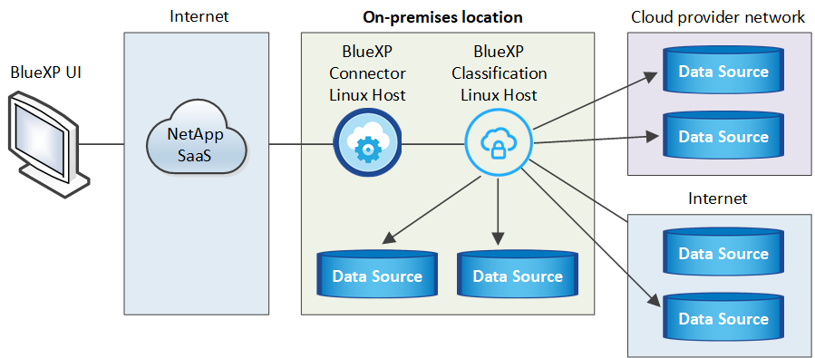
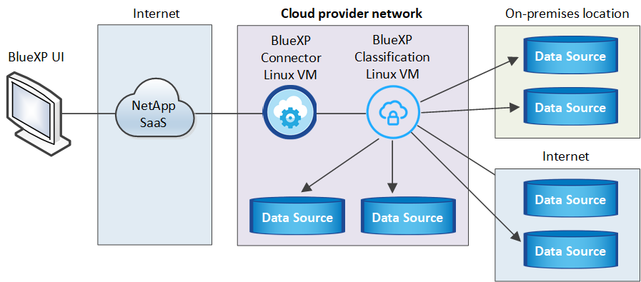
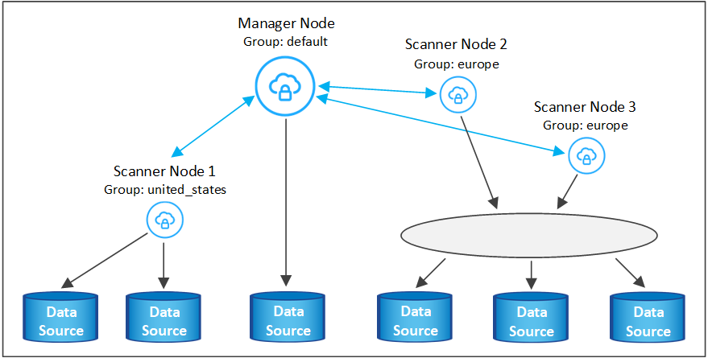
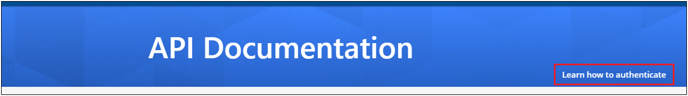

Notas de la versión
Notas de la versión
Instala la clasificación de BlueXP en un host que tenga acceso a Internet
 Sugerir cambios
Sugerir cambios
Completa unos pasos para instalar la clasificación de BlueXP en un host Linux en tu red o en un host Linux en la nube que tenga acceso a Internet. Deberá implementar el host Linux manualmente en su red o en el cloud como parte de esta instalación.
La instalación en las instalaciones puede ser una buena opción si prefieres analizar los sistemas de ONTAP on-premises mediante una instancia de clasificación de BlueXP que también está ubicada en las instalaciones, pero este no es un requisito. El software funciona exactamente de la misma manera, independientemente del método de instalación que elija.
El script de instalación de clasificación de BlueXP comienza comprobando si el sistema y el entorno cumplen los requisitos previos necesarios. Si se cumplen todos los requisitos previos, se inicia la instalación. Si desea verificar los requisitos previos independientemente de la ejecución de la instalación de la clasificación de BlueXP, puede descargar un paquete de software independiente que solo prueba los requisitos previos. "Descubre cómo comprobar si tu host Linux está listo para instalar la clasificación de BlueXP".
La instalación típica en un host Linux in your local tiene los siguientes componentes y conexiones.

La instalación típica en un host Linux en la nube tiene los siguientes componentes y conexiones.

En configuraciones de gran tamaño en las que va a escanear petabytes de datos, puede incluir varios hosts para proporcionar una capacidad de procesamiento adicional. Cuando se utilizan varios sistemas host, el sistema principal se denomina Manager node y los sistemas adicionales que proporcionan potencia de procesamiento adicional se denominan Scanner Nodes.
Tenga en cuenta que también puede "Instala la clasificación de BlueXP en un sitio on-premises que no tenga acceso a Internet" para ubicaciones completamente seguras.
Inicio rápido
Empiece rápidamente siguiendo estos pasos o desplácese hacia abajo hasta las secciones restantes para obtener todos los detalles.
 Cree un conector
Cree un conectorSi aún no tiene un conector, "Ponga en marcha el conector en las instalaciones" En un host Linux de su red o en un host Linux del cloud.
También puede crear un conector con su proveedor de cloud. Consulte "Creación de un conector en AWS", "Creación de un conector en Azure", o. "Creación de un conector en GCP".
 Revise los requisitos previos
Revise los requisitos previosAsegúrese de que el entorno pueda cumplir con los requisitos previos. Esto incluye acceso a Internet saliente para la instancia, conectividad entre Connector y la clasificación de BlueXP a través del puerto 443, y mucho más. Vea la lista completa.
También necesita un sistema Linux que cumpla con el siga los requisitos.
 Descarga e implementa la clasificación de BlueXP
Descarga e implementa la clasificación de BlueXPDescarga el software de clasificación de Cloud BlueXP en el sitio de soporte de NetApp y copia el archivo del instalador en el host Linux que tengas que utilizar. A continuación, inicie el asistente de instalación y siga las indicaciones para implementar la instancia de clasificación de BlueXP.
 Suscríbete al servicio de clasificación de BlueXP
Suscríbete al servicio de clasificación de BlueXPLos primeros 1 TB de datos que analiza la clasificación de BlueXP en BlueXP son gratuitos durante 30 días. Debe suscribirse a su mercado de proveedores de cloud o una licencia de BYOL de NetApp para continuar analizando los datos después de ese punto.
Cree un conector
Es necesario un conector BlueXP para poder instalar y utilizar la clasificación de BlueXP. En la mayoría de los casos, es probable que tengas configurado un Connector antes de intentar activar la clasificación de BlueXP debido a que en la mayoría de los casos "Las funciones de BlueXP requieren un conector", pero hay casos en los que necesitará configurar uno ahora.
Para crear una en su entorno de proveedor de cloud, consulte "Creación de un conector en AWS", "Creación de un conector en Azure", o. "Creación de un conector en GCP".
Existen algunas situaciones en las que debe utilizar un conector implementado en un proveedor de cloud específico:
-
Cuando escanea datos en Cloud Volumes ONTAP en AWS, Amazon FSx para ONTAP o en buckets AWS S3, usa un conector en AWS.
-
Al escanear datos en Cloud Volumes ONTAP en Azure o en Azure NetApp Files, se utiliza un conector en Azure.
Para Azure NetApp Files, debe implementarse en la misma región que los volúmenes que desea analizar.
-
Al analizar datos en Cloud Volumes ONTAP en GCP, se utiliza un conector en GCP.
Los sistemas ONTAP en las instalaciones, recursos compartidos de archivos que no son de NetApp, almacenamiento de objetos genérico de S3, bases de datos, carpetas de OneDrive, cuentas de SharePoint y cuentas de Google Drive se pueden analizar con cualquiera de estos conectores de cloud.
Tenga en cuenta que también puede "Ponga en marcha el conector en las instalaciones" En un host Linux de su red o en un host Linux del cloud. Algunos usuarios que planean instalar la clasificación de BlueXP en las instalaciones también pueden optar por instalar el conector en las instalaciones.
Como puede ver, puede que haya algunas situaciones en las que necesite utilizar "Múltiples conectores".
Necesitarás la dirección IP o el nombre de host del sistema Connector al instalar la clasificación de BlueXP. Tendrá esta información si instaló el conector en sus instalaciones. Si el conector está implementado en la nube, puede encontrar esta información desde la consola BlueXP: Haga clic en el icono Ayuda, seleccione Soporte y haga clic en conector BlueXP.
Prepare el sistema host Linux
El software de clasificación de BlueXP debe ejecutarse en un host que cumpla con los requisitos específicos del sistema operativo, los requisitos de RAM, los requisitos de software, etc. El host Linux puede estar en su red o en la nube.
Asegúrate de que puedes mantener en funcionamiento la clasificación de BlueXP. La máquina de clasificación de BlueXP tiene que permanecer en ella para analizar tus datos de forma continua.
-
La clasificación de BlueXP no se admite en un host compartido con otras aplicaciones; el host debe ser un host dedicado.
-
Al crear el sistema host en tus instalaciones, puedes elegir entre tres tamaños de sistema en función del tamaño del conjunto de datos que tengas pensado analizar la clasificación de BlueXP.
Tamaño del sistema CPU RAM (la memoria de intercambio debe estar desactivada) Disco * Extra grande*
32 CPU
128 GB DE MEMORIA RAM
1 TiB SSD en /, o.
- 100 GiB disponible en /opt
- 895 GiB disponible en /var/lib/docker
- 5 GiB en /tmpGrande
16 CPU
64 GB DE MEMORIA RAM
500 GiB SSD en /, o.
- 100 GiB disponible en /opt
- 395 GiB disponible en /var/lib/docker
- 5 GiB en /tmpMedia
8 CPU
32 GB DE MEMORIA RAM
200 GiB SSD en /, o.
- 50 GiB disponible en /opt
- 145 GiB disponible en /var/lib/docker
- 5 GiB en /tmpPequeño
8 CPU
16 GB DE MEMORIA RAM
100 GiB SSD en /, o.
- 50 GiB disponible en /opt
- 45 GiB disponible en /var/lib/docker
- 5 GiB en /tmpTenga en cuenta que existen limitaciones cuando se utilizan sistemas más pequeños. Consulte "Con un tipo de instancia más pequeño" para obtener más detalles.
-
A la hora de poner en marcha una instancia de computación en la nube para la instalación de tu clasificación de BlueXP, te recomendamos un sistema que cumpla los requisitos «grandes» del sistema anteriores:
-
Tipo de instancia de AWS EC2: Recomendamos "m6i.4xlarge". "Consulte tipos de instancia de AWS adicionales".
-
Azure VM size: Recomendamos "Standard_D16s_v3". "Consulte tipos de instancia de Azure adicionales".
-
Máquina GCP tipo: Recomendamos "n2-standard-16". "Consulte tipos de instancia de GCP adicionales".
-
-
Permisos de carpeta UNIX: Se requieren los siguientes permisos mínimos de UNIX:
Carpeta Permisos mínimos /tmp
rwxrwxrwt/opt
rwxr-xr-x/var/lib/docker
rwx------/usr/lib/systemd/system
rwxr-xr-x -
sistema operativo:
-
Los siguientes sistemas operativos requieren el uso del motor de contenedor Docker:
-
Red Hat Enterprise Linux versiones 7,8 y 7,9
-
CentOS versión 7,8 y 7,9
-
Ubuntu 22,04 (requiere la versión de clasificación de BlueXP 1,23 o posterior)
-
-
Los siguientes sistemas operativos requieren el uso del motor de contenedor Podman y requieren la versión de clasificación de BlueXP 1,26 o posterior:
-
Red Hat Enterprise Linux versiones 9,0, 9,1 y 9,2
Tenga en cuenta que las siguientes funciones no son compatibles actualmente con RHEL 9.x:
-
Instalación en un sitio oscuro
-
Escaneo distribuido; utilizando un nodo de escáner maestro y nodos de escáner remoto
-
-
-
-
Red Hat Subscription Management: El host debe estar registrado en Red Hat Subscription Management. Si no está registrado, el sistema no puede acceder a los repositorios para actualizar el software de 3rd partes necesario durante la instalación.
-
Software adicional: Debes instalar el siguiente software en el host antes de instalar la clasificación BlueXP:
-
Dependiendo del sistema operativo que esté utilizando, deberá instalar uno de los motores de contenedores:
-
Docker Engine versión 19.3.1 o posterior. "Ver las instrucciones de instalación".
"Vea este vídeo" Para obtener una demostración rápida de la instalación de Docker en CentOS.
-
Podman versión 4 o superior. Para instalar Podman, actualice los paquetes del sistema (
sudo yum update -y) Y, a continuación, instale Podman (sudo yum install podman -y).
-
-
Python versión 3,6 o superior. "Ver las instrucciones de instalación".
-
-
Consideraciones sobre NTP: NetApp recomienda configurar el sistema de clasificación BlueXP para usar un servicio de Protocolo de hora de red (NTP). La hora debe sincronizarse entre el sistema de clasificación de BlueXP y el sistema BlueXP Connector.
-
* Consideraciones de Firewalld*: Si usted está planeando utilizar
firewalld, Te recomendamos que lo habilites antes de instalar la clasificación de BlueXP. Ejecute los siguientes comandos para configurarfirewalldPara que sea compatible con la clasificación de BlueXP:firewall-cmd --permanent --add-service=http firewall-cmd --permanent --add-service=https firewall-cmd --permanent --add-port=80/tcp firewall-cmd --permanent --add-port=8080/tcp firewall-cmd --permanent --add-port=443/tcp firewall-cmd --reload
Si tienes pensado usar hosts de clasificación de BlueXP adicionales como nodos de análisis, añade estas reglas a tu sistema principal en este momento:
firewall-cmd --permanent --add-port=2377/tcp firewall-cmd --permanent --add-port=7946/udp firewall-cmd --permanent --add-port=7946/tcp firewall-cmd --permanent --add-port=4789/udp
Tenga en cuenta que debe reiniciar Docker o Podman cada vez que habilite o actualice
firewalldconfiguración.

|
La dirección IP del sistema host de clasificación de BlueXP no se puede cambiar tras la instalación. |
Habilita el acceso a Internet saliente desde la clasificación de BlueXP
La clasificación de BlueXP requiere acceso a Internet saliente. Si tu red física o virtual utiliza un servidor proxy para acceder a Internet, asegúrese de que la instancia de clasificación de BlueXP tenga acceso a Internet saliente para contactar con los siguientes extremos.
| Puntos finales | Específico |
|---|---|
https://api.bluexp.netapp.com |
Comunicación con el servicio BlueXP, que incluye cuentas de NetApp. |
https://netapp-cloud-account.auth0.com https://auth0.com |
Comunicación con el sitio Web de BlueXP para la autenticación centralizada del usuario. |
https://support.compliance.api.bluexp.netapp.com/ https://hub.docker.com https://auth.docker.io https://registry-1.docker.io https://index.docker.io/ https://dseasb33srnrn.cloudfront.net/ https://production.cloudflare.docker.com/ |
Proporciona acceso a imágenes de software, manifiestos, plantillas y para enviar registros y métricas. |
https://support.compliance.api.bluexp.netapp.com/ |
Permite a NetApp transmitir datos desde registros de auditoría. |
https://github.com/docker https://download.docker.com |
Proporciona paquetes de requisitos previos para la instalación de Docker. |
http://mirror.centos.org http://mirrorlist.centos.org http://mirror.centos.org/centos/7/extras/x86_64/Packages/container-selinux-2.107-3.el7.noarch.rpm |
Proporciona paquetes de requisitos previos para la instalación de CentOS. |
http://packages.ubuntu.com/ |
Proporciona paquetes de requisitos previos para la instalación de Ubuntu. |
Verifique que todos los puertos necesarios estén habilitados
Debes asegurarte de que todos los puertos requeridos estén abiertos para la comunicación entre el conector, la clasificación de BlueXP, Active Directory y los orígenes de datos.
| Tipo de conexión | Puertos | Descripción |
|---|---|---|
Conector Clasificación de <> BlueXP |
8080 (TCP), 443 (TCP) y 80 |
El firewall o las reglas de enrutamiento para Connector deben permitir el tráfico de entrada y salida a través del puerto 443 hacia y desde la instancia de clasificación de BlueXP. Asegúrese de que el puerto 8080 está abierto para que pueda ver el progreso de la instalación en BlueXP. |
Conector <> clúster ONTAP (NAS) |
443 (TCP) |
BlueXP detecta los clústeres de ONTAP mediante HTTPS. Si utiliza directivas de firewall personalizadas, deben cumplir los siguientes requisitos:
|
Clasificación de BlueXP <> Cluster de ONTAP |
|
La clasificación de BlueXP necesita una conexión de red con cada subred Cloud Volumes ONTAP o sistema ONTAP en las instalaciones. Los firewalls o las reglas de enrutamiento para Cloud Volumes ONTAP deben permitir las conexiones entrantes desde la instancia de clasificación de BlueXP. Asegúrate de que estos puertos estén abiertos a la instancia de clasificación de BlueXP:
Las políticas de exportación de volúmenes de NFS deben permitir el acceso desde la instancia de clasificación de BlueXP. |
Clasificación de BlueXP <> Active Directory |
389 (TCP Y UDP), 636 (TCP), 3268 (TCP) Y 3269 (TCP) |
Debe tener un Active Directory ya configurado para los usuarios de su empresa. Además, la clasificación de BlueXP necesita credenciales de Active Directory para analizar los volúmenes de CIFS. Debe tener la información de Active Directory:
|
Si utilizas varios hosts de clasificación de BlueXP para obtener una capacidad de procesamiento adicional para analizar tus orígenes de datos, tendrás que habilitar puertos/protocolos adicionales. "Consulte los requisitos de puerto adicionales".
Instale la clasificación BlueXP en el host Linux
En configuraciones típicas, instalará el software en un único sistema host. Consulte estos pasos aquí.

En configuraciones de gran tamaño en las que va a escanear petabytes de datos, puede incluir varios hosts para proporcionar una capacidad de procesamiento adicional. Consulte estos pasos aquí.

Consulte Preparar el sistema host Linux y.. Revisión de requisitos previos Para consultar la lista completa de requisitos antes de poner en marcha la clasificación de BlueXP.
Las actualizaciones del software de clasificación de BlueXP se automatizan siempre que la instancia tenga conectividad a Internet.
|
|
La clasificación de BlueXP no puede analizar los buckets de S3, Azure NetApp Files o FSx para ONTAP cuando el software está instalado en las instalaciones. En estos casos, tendrás que poner en marcha un Connector independiente y una instancia de la clasificación de BlueXP en la nube y en la nube "Cambiar entre conectores" para sus diferentes fuentes de datos. |
Instalación de un solo host para configuraciones típicas
Revise los requisitos y siga estos pasos al instalar el software de clasificación de BlueXP en un único host local.
"Vea este vídeo" Para ver cómo instalar la clasificación de BlueXP.
Tenga en cuenta que todas las actividades de instalación se registran al instalar la clasificación de BlueXP. Si tiene algún problema durante la instalación, puede ver el contenido del registro de auditoría de la instalación. Está escrito en /opt/netapp/install_logs/. "Consulte más detalles aquí".
-
Compruebe que su sistema Linux cumple con el requisitos del host.
-
Compruebe que el sistema tiene instalados los dos paquetes de software de requisitos previos (Docker Engine o Podman y Python 3).
-
Asegúrese de tener privilegios de usuario raíz en el sistema Linux.
-
Si utiliza un proxy para acceder a Internet:
-
Necesitará la información del servidor proxy (dirección IP o nombre de host, puerto de conexión, esquema de conexión: https o http, nombre de usuario y contraseña).
-
Si el proxy ejecuta la intercepción TLS, deberá conocer la ruta en el sistema Linux de clasificación BlueXP donde se almacenan los certificados de CA TLS.
-
El proxy debe ser no transparente; actualmente no admitimos proxies transparentes.
-
El usuario debe ser un usuario local. Los usuarios de dominio no son compatibles.
-
-
Compruebe que su entorno sin conexión cumple con las necesidades permisos y conectividad.
-
Descargue el software de clasificación de BlueXP en la "Sitio de soporte de NetApp". El archivo que debe seleccionar se denomina DATASENSE-INSTALLER-<version>.tar.gz.
-
Copie el archivo del instalador en el host Linux que tiene previsto utilizar (mediante
scpo algún otro método). -
Descomprima el archivo del instalador en el equipo host; por ejemplo:
tar -xzf DATASENSE-INSTALLER-V1.25.0.tar.gz -
En BlueXP, seleccione Gobierno > Clasificación.
-
Haga clic en Activar detección de datos.

-
En función de si vas a instalar la clasificación de BlueXP en una instancia que preparaste en la nube o en una instancia que preparaste en tus instalaciones, haz clic en el botón Deploy adecuado para iniciar la instalación de la clasificación de BlueXP.

-
Aparece el cuadro de diálogo Deploy Data Sense on local. Copie el comando proporcionado (por ejemplo:
sudo ./install.sh -a 12345 -c 27AG75 -t 2198qq) y péguela en un archivo de texto para que pueda usarlo más tarde. A continuación, haga clic en Cerrar para descartar el cuadro de diálogo. -
En el equipo host, escriba el comando que copió y luego siga una serie de avisos, o bien puede proporcionar el comando completo incluyendo todos los parámetros necesarios como argumentos de línea de comandos.
Tenga en cuenta que el instalador realiza una comprobación previa para asegurarse de que el sistema y los requisitos de red están en su lugar para una instalación correcta. "Vea este vídeo" para comprender los mensajes e implicaciones de comprobación previa.
Introduzca los parámetros según se le solicite: Introduzca el comando Full: -
Pegue el comando que copió del paso 7:
sudo ./install.sh -a <account_id> -c <client_id> -t <user_token>Si está instalando en una instancia de cloud (no en sus instalaciones), agregue
--manual-cloud-install <cloud_provider>. -
Introduzca la dirección IP o el nombre de host de la máquina host de clasificación de BlueXP para que se pueda acceder a ella desde el sistema Connector.
-
Introduzca la dirección IP o el nombre de host de la máquina host del conector de BlueXP para que el sistema de clasificación de BlueXP pueda acceder a ellos.
-
Introduzca los detalles del proxy según se le solicite. Si tu BlueXP Connector ya utiliza un proxy, no es necesario volver a introducir esta información aquí, ya que la clasificación de BlueXP usará automáticamente el proxy que utilizará The Connector.
También puede crear el comando completo por adelantado, proporcionando los parámetros de host y proxy necesarios:
sudo ./install.sh -a <account_id> -c <client_id> -t <user_token> --host <ds_host> --manager-host <cm_host> --manual-cloud-install <cloud_provider> --proxy-host <proxy_host> --proxy-port <proxy_port> --proxy-scheme <proxy_scheme> --proxy-user <proxy_user> --proxy-password <proxy_password> --cacert-folder-path <ca_cert_dir>Valores de variable:
-
account_id = ID de cuenta de NetApp
-
Client_id = Identificador de cliente de conector (agregue el sufijo “clientes” al ID de cliente si aún no está allí)
-
USER_token = token de acceso de usuario JWT
-
ds_host = dirección IP o nombre de host del sistema Linux de clasificación de BlueXP.
-
Cm_host = dirección IP o nombre de host del sistema BlueXP Connector.
-
CLOUD_PROVEEDOR = Cuando se instala en una instancia de nube, ingresa “AWS”, “Azure” o “GCP” dependiendo del proveedor de nube.
-
proxy_host = IP o nombre de host del servidor proxy si el host está detrás de un servidor proxy.
-
proxy_Port = Puerto para conectarse al servidor proxy (predeterminado 80).
-
Proxy_Scheme = combinación de conexiones: https o http (valor predeterminado http).
-
proxy_USER = Usuario autenticado para conectarse al servidor proxy, si se requiere autenticación básica. El usuario debe ser un usuario local: Los usuarios de dominio no son compatibles.
-
proxy_password = Contraseña del nombre de usuario especificado.
-
Ca_cert_dir = Ruta en el sistema Linux de clasificación BlueXP que contiene paquetes de certificados TLS CA adicionales. Sólo es necesario si el proxy está realizando intercepción TLS.
-
El instalador de clasificación de BlueXP instala los paquetes, registra la instalación e instala la clasificación de BlueXP. La instalación puede tardar entre 10 y 20 minutos.
Si hay conectividad por el puerto 8080 entre el equipo host y la instancia de Connector, verás el progreso de la instalación en la pestaña de clasificación de BlueXP de BlueXP.
En la página Configuración puede seleccionar los orígenes de datos que desea analizar.
También puede hacerlo "Configura las licencias para la clasificación de BlueXP" en este momento. No se le cobrará hasta que finalice su prueba gratuita de 30 días.
Agregar nodos de escáner a una implementación existente
Puede añadir más nodos de escáner si necesita más potencia de procesamiento de escaneado para analizar sus orígenes de datos. Puede añadir los nodos del escáner inmediatamente después de instalar el nodo Manager, o bien puede añadir un nodo de escáner más adelante. Por ejemplo, si se da cuenta de que la cantidad de datos de uno de sus orígenes de datos se ha duplicado o triplicado en tamaño después de 6 meses, puede añadir un nuevo nodo de escáner para ayudar con el análisis de datos.
Existen dos formas de añadir nodos de escáner adicionales:
-
agregue un nodo para ayudarle a analizar todos los orígenes de datos
-
agregar un nodo para ayudarle a escanear un origen de datos específico o un grupo específico de orígenes de datos (normalmente basado en la ubicación)
De forma predeterminada, los nuevos nodos de escáner que agregue se agregarán al pool general de recursos de digitalización. Esto se denomina "grupo de escáner predeterminado". En la siguiente imagen, hay 1 nodo de administrador y 3 nodos de escáner en el grupo "predeterminado" que están analizando todos los datos de los 6 orígenes de datos.

Si tiene ciertos orígenes de datos que desea analizar mediante nodos de escáner que están físicamente más cercanos a los orígenes de datos, puede definir un nodo de escáner o un grupo de nodos de escáner, para analizar un origen de datos específico o un grupo de orígenes de datos. En la siguiente imagen, hay 1 nodo de administrador y 3 nodos de escáner.
-
El nodo Administrador está en el grupo "predeterminado" y está analizando 1 origen de datos
-
El nodo 1 del escáner se encuentra en el grupo "estados Unidos" y está analizando 2 orígenes de datos
-
Los nodos de escáner 2 y 3 se encuentran en el grupo "europa" y comparten las tareas de escaneo para 3 fuentes de datos

Los grupos de análisis de clasificación de BlueXP pueden definirse como áreas geográficas independientes en las que se almacenan los datos. Puedes poner en marcha varios nodos de escáner de clasificación de BlueXP en todo el mundo y elegir un grupo de escáner para cada nodo. De esta forma, cada nodo de escáner analizará los datos más cercanos. Cuanto más cerca esté el nodo del escáner de los datos, mejor será porque reduce la latencia de red tanto como sea posible mientras escanea datos.
Puedes elegir qué grupos de escáneres añadir a la clasificación de BlueXP y puedes elegir sus nombres. La clasificación de BlueXP no obliga a que se ponga en marcha en Europa un nodo asignado a un grupo de escáner llamado «europa».
Seguirás estos pasos para instalar nodos adicionales de escáner de clasificación de BlueXP:
-
Prepare los sistemas host Linux que actuarán como nodos del escáner
-
Descargue el software Data Sense en estos sistemas Linux
-
Ejecute un comando en el nodo Administrador para identificar los nodos del escáner
-
Siga los pasos para implementar el software en los nodos del escáner (y para definir opcionalmente un "grupo de escáner" para determinados nodos del escáner)
-
Si ha definido un grupo de escáner, en el nodo Administrador:
-
Abra el archivo "working_Environment_to_scanner_group_config.yml" y defina los entornos de trabajo que explorarán cada grupo de escáneres
-
Ejecute la siguiente secuencia de comandos para registrar esta información de asignación en todos los nodos del escáner:
update_we_scanner_group_from_config_file.sh
-
-
Compruebe que todos los sistemas Linux para los nodos del escáner cumplen con el requisitos del host.
-
Compruebe que los sistemas tienen instalados los dos paquetes de software de requisitos previos (Docker Engine o Podman y Python 3).
-
Asegúrese de tener privilegios de usuario raíz en los sistemas Linux.
-
Compruebe que su entorno cumple con las necesidades permisos y conectividad.
-
Debe tener las direcciones IP de los hosts del nodo Scanner que desea añadir.
-
Debe tener la dirección IP del sistema host del nodo del gestor de clasificación de BlueXP
-
Debe tener la dirección IP o el nombre de host del sistema Connector, su ID de cuenta de NetApp, su identificador de cliente conector y el token de acceso de usuario. Si tiene previsto utilizar grupos de escáner, deberá conocer el identificador de entorno de trabajo de cada origen de datos de su cuenta. Consulte los pasos Prerrequisito siguientes para obtener esta información.
-
Deben habilitarse los siguientes puertos y protocolos en todos los hosts:
Puerto Protocolos Descripción 2377
TCP
Comunicaciones de gestión de clústeres
7946
TCP, UDP
Comunicación entre nodos
4789
UDP
Superpone el tráfico de red
50
ESP
Tráfico de red de superposición (ESP) IPsec cifrada
111
TCP, UDP
Servidor NFS para compartir archivos entre los hosts (necesario de cada nodo de escáner al nodo de administración)
2049
TCP, UDP
Servidor NFS para compartir archivos entre los hosts (necesario de cada nodo de escáner al nodo de administración)
-
Si está utilizando
firewalldEn tus máquinas de clasificación de BlueXP, te recomendamos habilitarla antes de instalar la clasificación de BlueXP. Ejecute los siguientes comandos para configurarfirewalldPara que sea compatible con la clasificación de BlueXP:firewall-cmd --permanent --add-service=http firewall-cmd --permanent --add-service=https firewall-cmd --permanent --add-port=80/tcp firewall-cmd --permanent --add-port=8080/tcp firewall-cmd --permanent --add-port=443/tcp firewall-cmd --permanent --add-port=2377/tcp firewall-cmd --permanent --add-port=7946/udp firewall-cmd --permanent --add-port=7946/tcp firewall-cmd --permanent --add-port=4789/udp firewall-cmd --reload
Tenga en cuenta que debe reiniciar Docker o Podman cada vez que habilite o actualice
firewalldconfiguración.
Siga estos pasos para obtener el identificador de cuenta de NetApp, el identificador de cliente del conector, el nombre de servidor del conector y el token de acceso de usuario necesarios para añadir nodos de escáner.
-
En la barra de menús de BlueXP, haga clic en cuenta > Administrar cuentas.

-
Copie el ID de cuenta.
-
En la barra de menús de BlueXP, haga clic en Ayuda > Soporte > conector BlueXP.

-
Copie el conector Client ID y el Server Name.
-
Si tienes pensado usar grupos de escáner, en la pestaña Configuración de clasificación de BlueXP, copia el ID de entorno de trabajo de cada entorno de trabajo que quieras añadir a un grupo de escáner.

-
Vaya a la "Centro de desarrollo de documentación de API" Y haga clic en aprender a autenticar.

-
Siga las instrucciones de autenticación, usando el nombre de usuario y la contraseña del administrador de la cuenta en los parámetros «nombre de usuario» y «contraseña».
-
A continuación, copie el token ACCESS de la respuesta.
-
En el nodo del gestor de clasificación de BlueXP, ejecute el script «add_scanner_node.sh». Por ejemplo, este comando añade 2 nodos de escáner:
sudo ./add_scanner_node.sh -a <account_id> -c <client_id> -m <cm_host> -h <ds_manager_ip> -n <node_private_ip_1,node_private_ip_2> -t <user_token>Valores de variable:
-
account_id = ID de cuenta de NetApp
-
Client_id = Identificador de cliente de conector (agregue el sufijo «Clientes» al ID de cliente que copió en los pasos de requisito previo)
-
Cm_host = dirección IP o nombre de host del sistema conector
-
ds_manager_ip = Dirección IP privada del sistema de nodos del Gestor de clasificación de BlueXP
-
Node_private_ip = direcciones IP de los sistemas de nodos del escáner de clasificación de BlueXP (varias IP de los nodos del escáner están separadas con comas)
-
USER_token = token de acceso de usuario JWT
-
-
Antes de que finalice la secuencia de comandos add_scanner_node, aparecerá un cuadro de diálogo con el comando de instalación necesario para los nodos del escáner. Copie el comando (por ejemplo:
sudo ./node_install.sh -m 10.11.12.13 -t ABCDEF1s35212 -u red95467j) y guárdelo en un archivo de texto. -
En el host cada nodo del escáner:
-
Copie el archivo de instalación de Data Sense (DATASENSE-INSTALLER-<version>.tar.gz) en el equipo host (usando
scpo algún otro método). -
Descomprima el archivo del instalador.
-
Pegue y ejecute el comando que copió en el paso 2.
-
Si desea agregar un nodo de escáner a un "grupo de escáner", agregue el parámetro -r <scanner_group_name> al comando. De lo contrario, el nodo del escáner se agrega al grupo "predeterminado".
Cuando la instalación termina en todos los nodos del escáner y se han Unido al nodo del administrador, el script "add_scanner_node.sh" también finaliza. La instalación puede tardar entre 10 y 20 minutos.
-
-
Si ha agregado algún nodo de escáner a un grupo de escáner, vuelva al nodo Administrador y realice las dos tareas siguientes:
-
Abra el archivo "/opt/netapp/Datashense/working_Environment_to_scanner_group_config.yml" e introduzca la asignación para la que los grupos de escáneres exploran entornos de trabajo específicos. Deberá tener el ID de entorno de trabajo para cada origen de datos. Por ejemplo, las siguientes entradas agregan 2 entornos de trabajo al grupo de escáneres "europa" y 2 al grupo de escáneres "estados Unidos":
scanner_groups: europe: working_environments: - "working_environment_id1" - "working_environment_id2" united_states: working_environments: - "working_environment_id3" - "working_environment_id4"El grupo "predeterminado" analiza cualquier entorno de trabajo que no se agregue a la lista; debe tener al menos un nodo de administrador o escáner en el grupo "predeterminado".
-
Ejecute la siguiente secuencia de comandos para registrar esta información de asignación en todos los nodos del escáner:
/opt/netapp/Datasense/tools/update_we_scanner_group_from_config_file.sh
-
La clasificación de BlueXP se configura con nodos Manager y Scanner para analizar todas tus fuentes de datos.
En la página Configuración puede seleccionar los orígenes de datos que desea analizar, si aún no lo ha hecho. Si ha creado grupos de escáner, los nodos de escáner del grupo correspondiente escanean cada origen de datos.
Puede ver el nombre del grupo de escáneres de cada entorno de trabajo en la página Configuración.
También puede ver la lista de todos los grupos de escáneres junto con la dirección IP y el estado de cada nodo de escáner del grupo en la parte inferior de la página Configuración.

Puede hacerlo "Configura las licencias para la clasificación de BlueXP" en este momento. No se le cobrará hasta que finalice su prueba gratuita de 30 días.
Instalación de varios hosts para configuraciones grandes
En configuraciones de gran tamaño en las que va a escanear petabytes de datos, puede incluir varios hosts para proporcionar una capacidad de procesamiento adicional. Cuando se utilizan varios sistemas host, el sistema principal se denomina Manager node y los sistemas adicionales que proporcionan potencia de procesamiento adicional se denominan Scanner Nodes.
Sigue estos pasos cuando instales el software de clasificación BlueXP en varios hosts on-premises a la vez. Tenga en cuenta que no puede utilizar "grupos de escáneres" al implementar varios hosts de esta forma.
-
Verifique que todos los sistemas Linux para los nodos Manager y Scanner se adapten al requisitos del host.
-
Compruebe que los sistemas tienen instalados los dos paquetes de software de requisitos previos (Docker o Podman Engine y Python 3).
-
Asegúrese de tener privilegios de usuario raíz en los sistemas Linux.
-
Compruebe que su entorno cumple con las necesidades permisos y conectividad.
-
Debe tener las direcciones IP de los hosts de nodos de escáner que desee utilizar.
-
Deben habilitarse los siguientes puertos y protocolos en todos los hosts:
Puerto Protocolos Descripción 2377
TCP
Comunicaciones de gestión de clústeres
7946
TCP, UDP
Comunicación entre nodos
4789
UDP
Superpone el tráfico de red
50
ESP
Tráfico de red de superposición (ESP) IPsec cifrada
111
TCP, UDP
Servidor NFS para compartir archivos entre los hosts (necesario de cada nodo de escáner al nodo de administración)
2049
TCP, UDP
Servidor NFS para compartir archivos entre los hosts (necesario de cada nodo de escáner al nodo de administración)
-
Siga los pasos 1 a 7 de la Instalación de un solo host en el nodo de gestión.
-
Como se muestra en el paso 8, cuando el instalador lo solicite, puede introducir los valores necesarios en una serie de peticiones o puede proporcionar los parámetros necesarios como argumentos de línea de comandos al instalador.
Además de las variables disponibles para una instalación de un solo host, se utiliza una nueva opción -n <node_ip> para especificar las direcciones IP de los nodos del escáner. Las varias IP de nodos de escáner están separadas por una coma.
Por ejemplo, este comando añade 3 nodos de escáner:
sudo ./install.sh -a <account_id> -c <client_id> -t <user_token> --host <ds_host> --manager-host <cm_host> -n <node_ip1>,<node_ip2>,<node_ip3> --proxy-host <proxy_host> --proxy-port <proxy_port> --proxy-scheme <proxy_scheme> --proxy-user <proxy_user> --proxy-password <proxy_password> -
Antes de que se complete la instalación del nodo de gestión, se mostrará un cuadro de diálogo con el comando de instalación necesario para los nodos del escáner. Copiar el comando (por ejemplo,
sudo ./node_install.sh -m 10.11.12.13 -t ABCDEF-1-3u69m1-1s35212) y guárdelo en un archivo de texto. -
En el host cada nodo del escáner:
-
Copie el archivo de instalación de Data Sense (DATASENSE-INSTALLER-<version>.tar.gz) en el equipo host (usando
scpo algún otro método). -
Descomprima el archivo del instalador.
-
Pegue y ejecute el comando que copió en el paso 3.
Cuando la instalación finalice en todos los nodos de escáner y se han Unido al nodo de gestión, también se completa la instalación del nodo de gestión.
-
El instalador de clasificación de BlueXP finalizará la instalación de paquetes y registrará la instalación. La instalación puede tardar entre 10 y 20 minutos.
En la página Configuración puede seleccionar los orígenes de datos que desea analizar.
También puede hacerlo "Configura las licencias para la clasificación de BlueXP" en este momento. No se le cobrará hasta que finalice su prueba gratuita de 30 días.